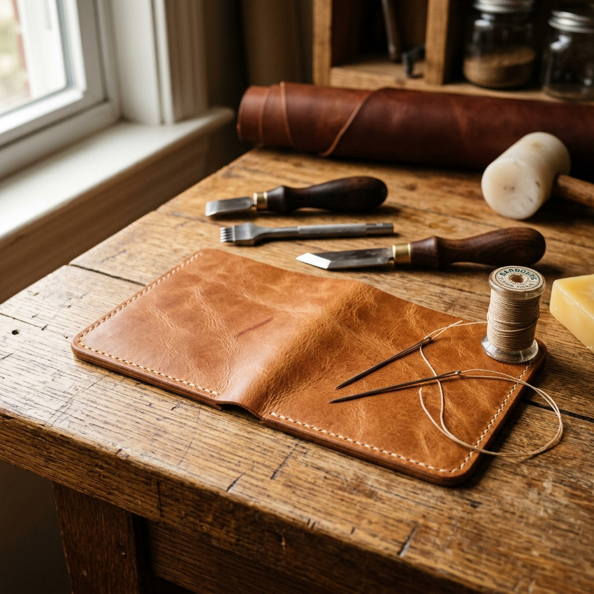
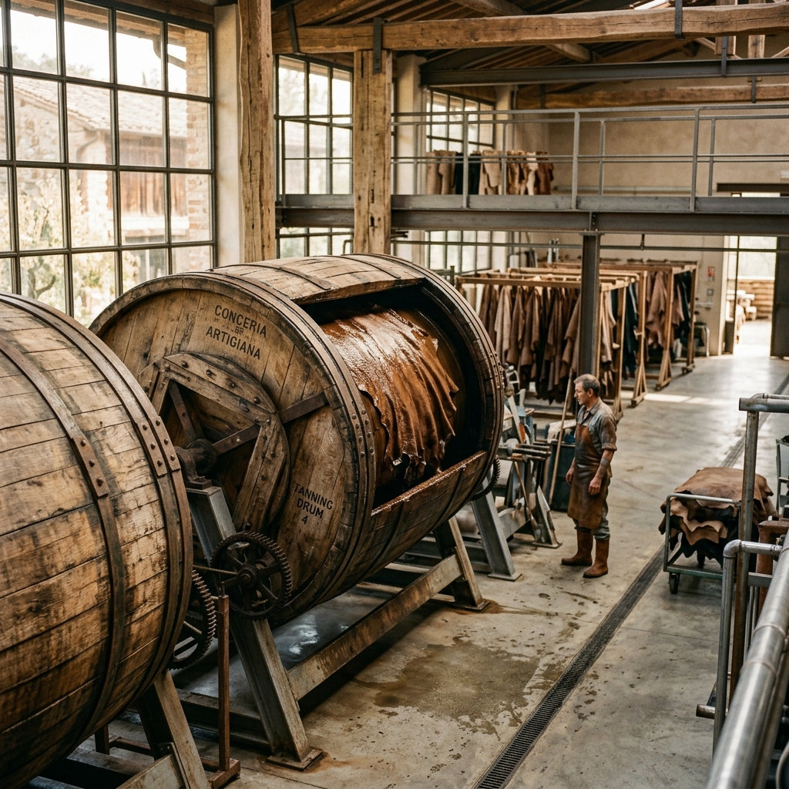
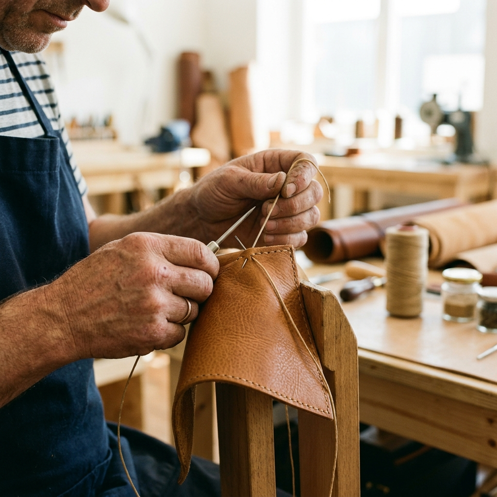
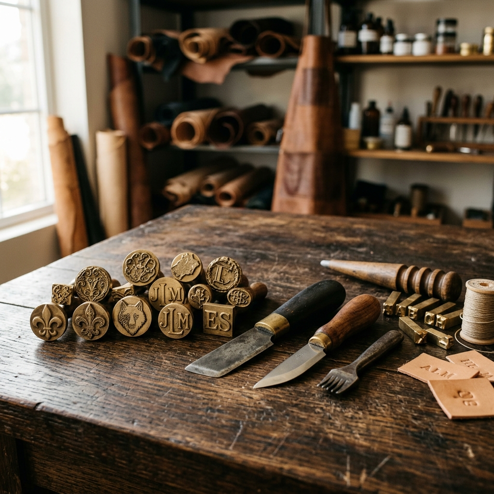

Our Promise
We believe that the only way to guarantee how something is built is to build it ourselves. From the initial tanning process to the final stitch, every step happens under our own roof.

Since 1991, we have worked directly from the raw hide to the finished piece. By running our tannery and workshop together, we control every detail. We do not source pre-made materials or outsource our stitching. Every bag and wallet is built at source by people who have spent decades learning how leather behaves. The full-grain hides we finish are designed to soften with use, shaped by your daily habits, growing a rich patina that is unique to you. This is why we make things to live in, not just to look at.
The Pargal Family
Our tannery is audited by the Leather Working Group, achieving their Gold standard for environmental performance. We manage water reuse and energy consumption at source, making sure our impact is handled responsibly.

We ensure fair wages, safe workspaces, and ethical labor standards across our entire supply chain. Our facilities are audited regularly to meet strict global compliance metrics.

Established in 1991, our family-run tannery and workshop combine over three decades of mastery. We pass down the techniques of splitting, skiving, and stitching through generations.
Discover our full-grain leather pieces built for a lifetime of use, or read our guide on how to care for them.